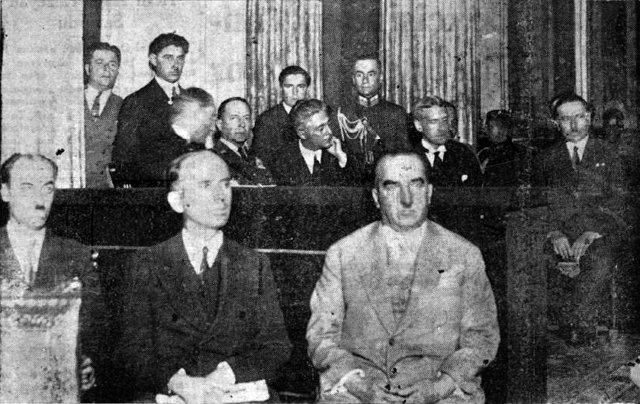
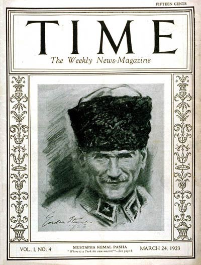
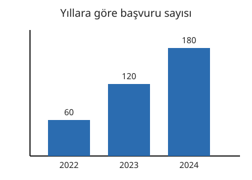
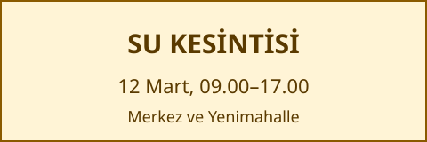
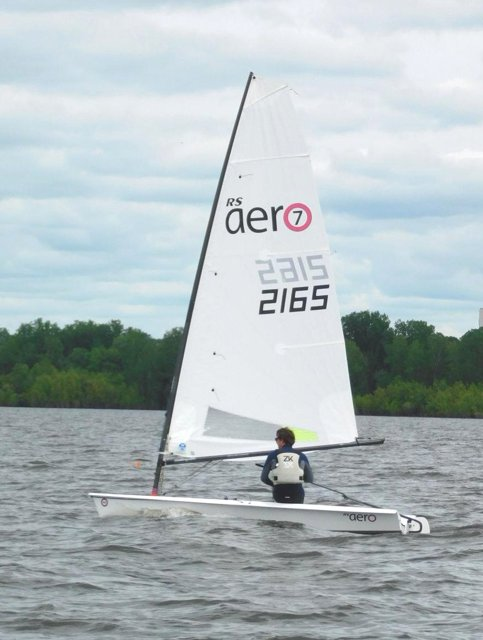

Belediyeden haberler
Arşivden


Başvurular

Duyuru

Göl ve deniz

Mavi gökyüzü önünde yükselen beyaz taş deniz feneri


For visitors


Otopark yarın kapalı. Otopark duyurusu





Mavi gökyüzü önünde yükselen beyaz taş deniz feneri
Otopark yarın kapalı. Otopark duyurusu